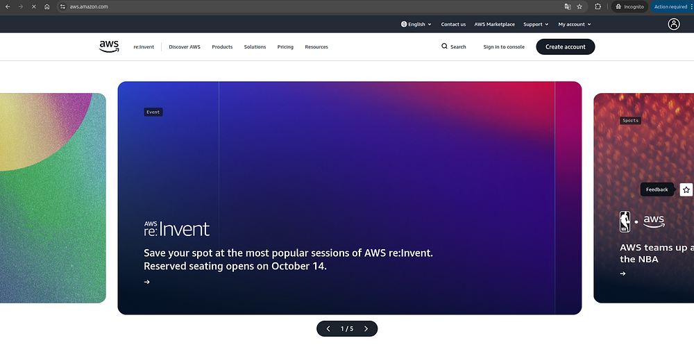
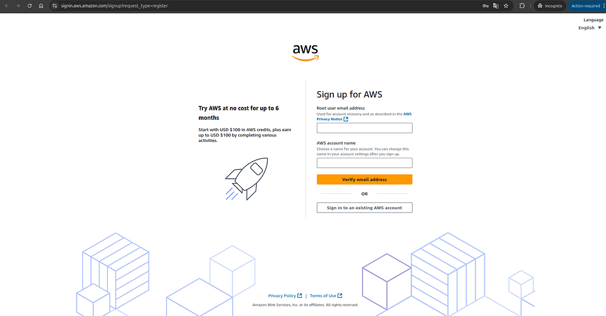
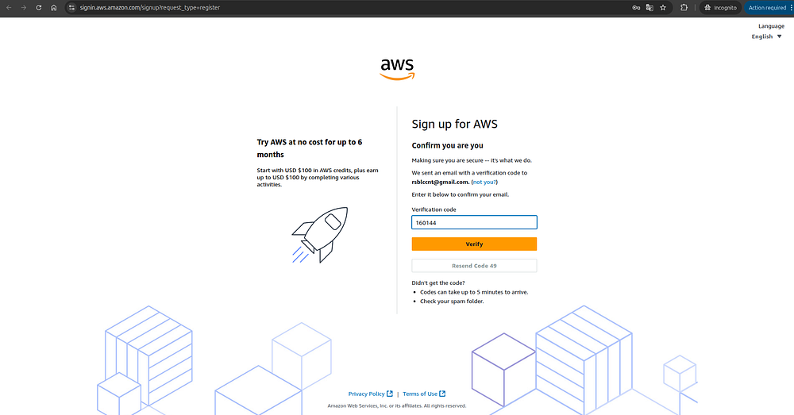
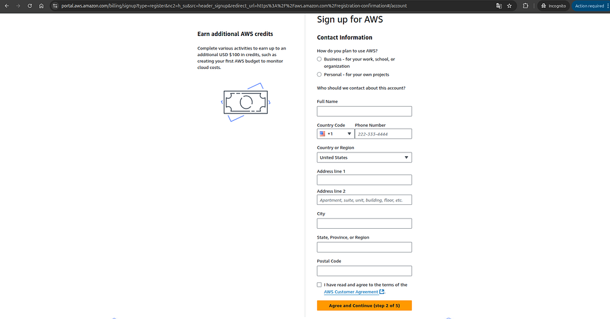
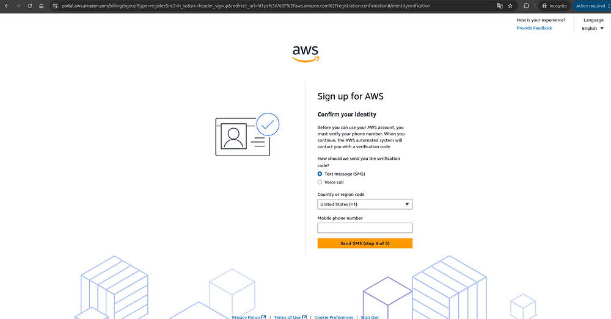
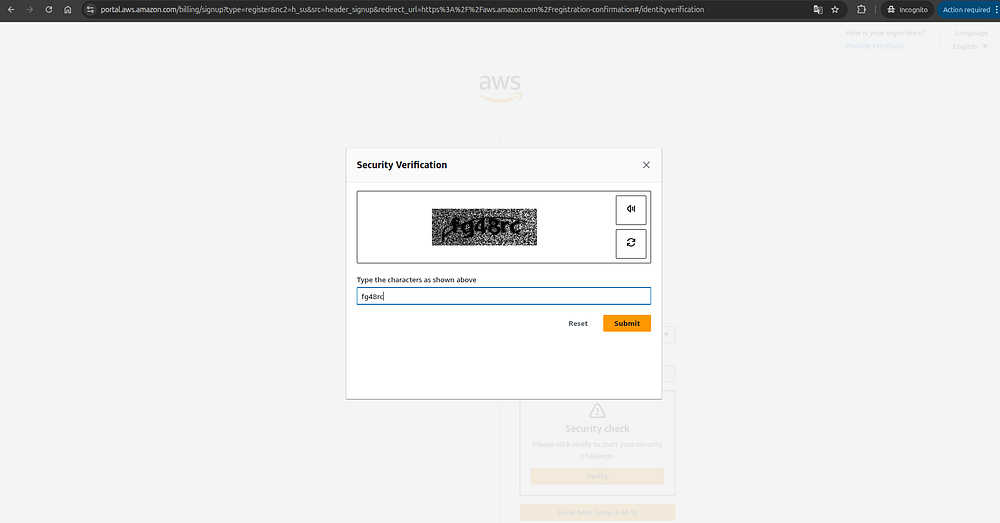
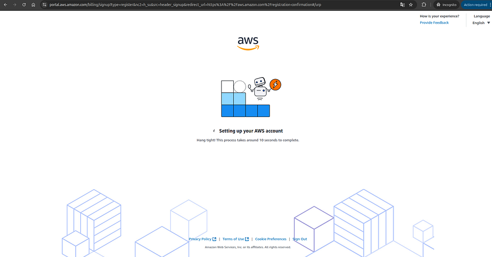
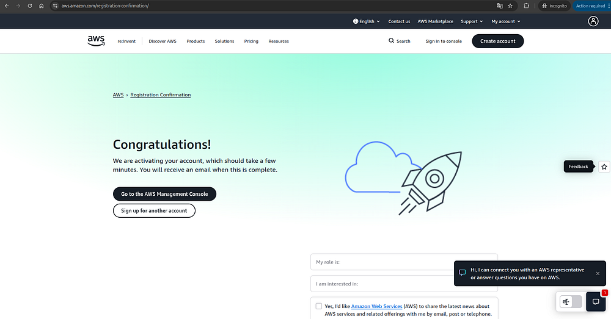
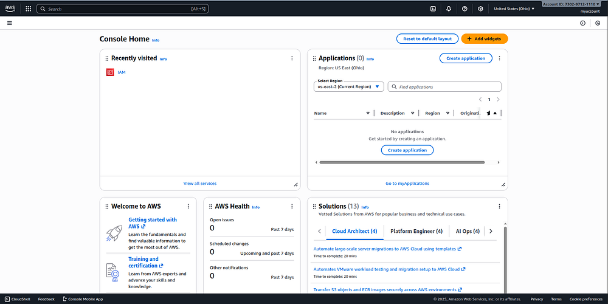

Guide to Creating Your AWS Account
Requirements
- An email address to register and receive a verification code.
- A credit or debit card with at least $1–$2 available. AWS will temporarily charge this small amount to verify your card, but it will be refunded after verification. If you don’t want to use your main card, you can use a virtual or temporary card — several mobile apps offer this option depending on your country.
Go to aws.amazon.com and click “Create account”

Fill in the required fields
Enter your email address and choose a name for your account, then click “Verify email address.”

Check your email inbox
You’ll receive a message from AWS containing a verification code to confirm that the email address belongs to you.\ Enter the code in the “Verification code” field and click “Verify.”
If you don’t see the email after a few minutes, check your spam or junk folder, as it may have been filtered there.

Set a password for your root user
Make sure to choose a strong and secure password, since the root user is the main account owner and has full privileges to perform any action — including creating resources that, if misused, could lead to unexpected charges of thousands of dollars.\ Once you’ve created your password, click “Continue.”

Choose a plan
For this tutorial, select the Free plan on the left.\ This plan gives you access to a generous set of free-tier services, along with $100 in AWS credits that you can use from the moment your account is created and for up to six months thereafter.

Fill out your personal information
Enter your name, phone number, country, address, city, and postal code.\ Then, check the box that says “I have read and agree to the terms of the AWS Customer Agreement,” and click “Agree and Continue.”

Enter your credit or debit card information
Accept the terms, and click “Verify and Continue.”

Add your phone number
First, select your country code, then enter your phone number, and finally click “Send SMS.”

Complete the captcha
You’ll now see a captcha — this may vary. In my case, it displayed a hard-to-read text. Enter the text into the field provided and click “Submit.”

Verify the code sent to your phone
Enter the code in the “Verify code” field and click “Continue.”

Wait for your account to be created
All the steps are now complete! Just wait a few seconds, and your AWS account will be ready to use.

Go to the AWS Management Console
When the congratulations screen appears, click “Go to the AWS Management Console.”

That’s it! 🎉 You now have your AWS account ready to start using AWS services.\ You’re currently viewing the AWS Management Console, where you can create, manage, and explore your own cloud resources within AWS.

Congratulations on reaching the end of this guide!
You’ve successfully created your own AWS account — the essential first step to start exploring and using Amazon Web Services.